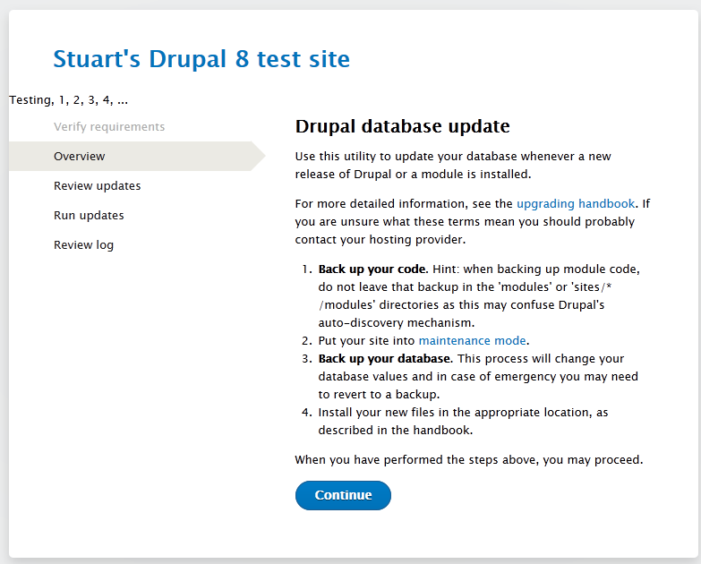
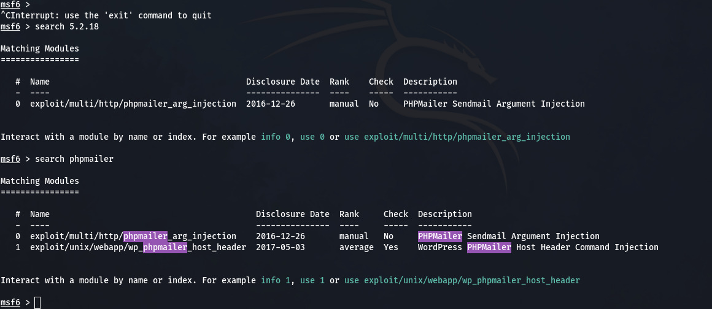

Security Misconfigurations
- Regular Updates and Patching Keep all software, libraries, and components up to date by applying security patches and updates. Developers frequently release patches to address vulnerabilities.
- Dependency Management Implement a robust dependency management process. Use tools like package managers to control and monitor dependencies, ensuring that you're using the latest and secure versions.
- Vulnerability Databases Subscribe to vulnerability databases like the National Vulnerability Database (NVD) to stay informed about known vulnerabilities in your components.
- Replace Outdated Components If a component is no longer supported or has critical vulnerabilities, consider replacing it with a more secure alternative.
- Code Review and Auditing Regularly review your code and audit your software for outdated or vulnerable components. Ensure that all components meet security standards.
- Least Privilege Access Restrict access to sensitive components and libraries. Only grant permissions to those who need them, and limit access based on the principle of least privilege.
- Third-Party Risk Assessment Assess the security posture of third-party components and libraries you use in your software. Ensure they follow secure development practices and put regular updates.
- Security Misconfiguration is a critical security issue that arises when an application, its server, database, or components are not properly configured. This can happen at any level of an application stack, including the network services, platform, web server, application server, database, and framework. Misconfigurations can happen due to various reasons, such as lack of standard configurations, unpatched flaws that are vulnerable to known misconfigurations, insecure default configurations, and incomplete configurations.
The impact of this type of vulnerability can range from a minor issue to a major security breach. For instance, a misconfigured HTTP header can allow an attacker to hijack cookies, expose sensitive information, or cache private data. In a cloud environment, a misconfigured container or virtual machine can expose all data in the cloud. In a database, a misconfiguration can expose all data in the database. In this page we have discussed certain weaknesses and vulnerabilities.
1. Improper Data/Input Validation
- Almost all the bugs explained below can be done with the help of improper validation and sanitization of data. So, you can see that it plays an crucial role in bug hunting. It is a common attack vector for finding vulnerabilities. This issue arises when a web application does not adequately validate or sanitize user inputs before processing them. This can lead to a wide range of vulnerabilities, including SQL injection, cross-site scripting (XSS), buffer Overflow, etc.
It can arise in a variety of contexts. It can occur in any part of an application that process user input. This could be a web form, a URL, a cookie, an HTTP Header, API endpoints or any other type of input. When a web application is allowing entering symbols, numbers or string in a places where they are not required or no max or min length.
For example: A user is able to enter text in number field, symbols in name field or leave any field null. It can be reported by itself but it would not pose significant effect so for increasing impact it must be chain like improper validation leads to html injection, etc.
- You Must check these things in input validation. These can be chain and also individually reported.
- Type Checking This process involves ensuring that the input is of the correct type. For example, if a variable is supposed to be a number, type checking would ensure that the input is indeed a number.
- Length Checking This process involves ensuring that the input is of the correct length. This can help prevent buffer overflow vulnerabilities, where data is written to a section of memory that should not have been modified.
- Input Encoding This process involves translating potentially dangerous characters into a protected form. For instance, in HTML, the < and > characters are replaced with their corresponding HTML entities to prevent them from being interpreted as tags.
- Input Filtering This process involves checking the input against a set of rules and accepting or rejecting it accordingly. For example, a filter could be set up to reject any input that contains special characters or SQL keywords.
- Input Sanitization This process ensures that the input coming from untrusted users is clean. It is a form of validation, but instead of looking for values that are valid, it looks for values that are invalid. For instance, if an application expects a number, input sanitization would check for any non-numeric characters.

2. Length Overflow
- It a part of above weakness i.e length checking, but it can be also classified alone as it can leads to Application DOS attack or time delay. Length overflow is a type of attack where the attacker sends a request with an extremely long length payload, causing the server to crash. It can be text, number, symbols, or mix. This is a type of Denial of Service (DoS) attack.
- Example: If you try to upload long text with symbols in the comment option of blog website and it says that special character not allowed so try to only upload long alphabet or numbers.
- Here below is a long text payload text file that you can use to put in input fields.
3. Poor Encryption Used
- This term is a broad description that could encompass various weaknesses related to encryption implementations in software, protocols, or systems. Poor encryption practices can lead to serious security risks, as encryption is a fundamental component of securing sensitive data.
1. No Force HTTPS:
- Typically it refers to a situation where a website doesn't enforce the use of HTTPS for secure communication between the client (browser) and the server. HTTPS encrypts the data transmitted between the user and the website, providing a secure connection. In simple words it means that if we visit a page and it is opened in HTTP protocol and not HTTPS.
- Impact If a website doesn't properly force the use of HTTPS, it might be susceptible to various security risks, including man-in-the-middle attacks, where an attacker could intercept or manipulate the data being transmitted.
2. TLS Cipher Issues
- A "weak TLS cipher" would suggest that the encryption algorithms and ciphers used in the TLS handshake and subsequent communication are not strong enough, making the communication vulnerable to attacks. This could include the use of deprecated or insecure cryptographic algorithms.
- Use of Weak or Deprecated Ciphers Some older or insecure encryption algorithms and ciphers may be used in TLS configurations. For example, ciphers like RC4 or DES (Data Encryption Standard) are considered weak and have known vulnerabilities. It's crucial to avoid the use of deprecated ciphers to ensure a secure connection.
- Outdated Protocols The use of outdated TLS protocols, such as TLS 1.0 or TLS 1.1, can pose security risks. These protocols may have known vulnerabilities, and modern best practices recommend using the latest versions of TLS (such as TLS 1.2 or TLS 1.3) for improved security.
- NOTE: If a website is doing these above things that you can try to report them as a weakness.
4. HTTP Headers Misconf
- These misconfigurations might expose sensitive information, enable attacks, or impact the overall security posture of a web application. You can use Burpsuite tool or curl command to intercept requests and responses.
- Exposed Server Information HTTP response headers may include information about the server software being used. While this information is often harmless, it can be leveraged by attackers to identify potential vulnerabilities specific to the server software.
Server: Apache/2.4.29 (Ubuntu) X-Powered-By: PHP/7.4.3
5. HTTP Security Headers
- HTTP security headers play a crucial role in enhancing the security of web applications by providing additional instructions to web browsers. Here Nuclei tool, Burpsuite and curl command can help you.
- Content Security Policy (CSP) Allowing 'unsafe-inline' for scripts introduces a security risk by allowing inline script execution, potentially exposing the application to Cross-Site Scripting (XSS) attacks.
Content-Security-Policy: default-src 'self'; script-src 'unsafe-inline'
- Strict-Transport-Security (HSTS) Setting max-age to 0 effectively disables HSTS. This misconfiguration may expose users to downgrade attacks, where an attacker can force communication over HTTP.
Strict-Transport-Security: max-age=0
- X-Content-Type-Options A misconfiguration might involve omitting the nosniff directive, allowing browsers to perform MIME sniffing and potentially leading to security risks.
X-Content-Type-Options: nosniff
- X-Frame-Options Using ALLOW-FROM with a specific domain is now deprecated/outdated due to potential security issues. It's recommended to use SAMEORIGIN instead.
X-Frame-Options: ALLOW-FROM https://allowed-domain.com
- Cache-Control Setting public without a proper max-age allows both private and shared caches to store the response indefinitely, potentially exposing sensitive information.
Cache-Control: public
- X-XSS-Protection Setting X-XSS-Protection to 0 disables XSS protection, which may expose the application to cross-site scripting (XSS) attacks.
X-XSS-Protection: 0
6. HTTP Methods
- HTTP methods misconfigurations refer to issues where a web server or application is improperly configured in terms of which HTTP methods (such as GET, POST, PUT, DELETE, PROPPATCH etc.) are allowed or disallowed on specific resources. You can use Burpsuite tool, curl command or inspect element for this.
- Use OPTIONS method in request and you will see in response that which methods are allowed or directly try to put method in request that you want.
#Response will be like this HTTP/1.1 200 OK Allow: GET, POST, OPTIONS, TRACE Access-Control-Allow-Methods: GET, POST, OPTIONS, TRACE
- Allowing Unsafe Methods Servers should restrict the use of potentially unsafe methods like PUT, DELETE, TRACE and others unless explicitly required.
Misconfigurations may occur if these methods are allowed without proper validation or authorization checks.
- Sensitive Information In some cases, sensitive information get disclosed or directory listing may be enabled when we change the HTTP Method. Example: If we see a page showing 403 in GET Request and if we try to change it to POST so it discloses information. It can also used in vulnerability chaining or to take internal access like we can use TRACE and it may reveal internal IP of 403 page and then we can put that in Host Header and bypass 403.
7. Directory Listing Enabled
- Directory Listing Enabled vulnerability occurs when a web server is configured to display the contents of a directory when there is no default index file (like index.html or index.php) present.
<Directory "/var/www/html/uploads">
Options +Indexes
</Directory>


8. Default Pages Enabled
- Sometimes when a website is using some software, CMS or any application. So there some default pages for that like in apache there is apache default page, in drupal their are some default pages like install.php, update.php. config.php which can be by default public and not private. It can be found out my manual crawling, directory busting or vulnerability scanning tools for specific CMS like Wpscan, Drupwn, etc.
- Note There can be not default pages for just softwares but also default pages for errors also. It can also provide version information, and custom error pages should be used.
- Impact It is a weakness and default pages can show information about the version used, which maybe outdated for more information about outdated components visit this page.

9. Default Credentials Used
- Default credential usage, also known as default username and password usage, is a critical security misconfiguration that occurs when a system or application is deployed with pre-configured or default credentials that are often well-known and widely documented. This misconfiguration can have severe consequences as it provides attackers with a straightforward way to gain unauthorized access to the system.
1. How to Find:
- First step is to find that which software is used and that can be find in information gathering. Sometimes you see that the website is using Apache web server and you have discovered a web server login page so try to put apache default credentials or you see just weak credentials or default credentials like admin:admin, root:root, etc and those can be find on internet in form of file, text, etc. You can try to manually put them or use tool to automate.
- Tools that can be used is Burpsuite Intruder, Hydra, etc. Here are some list of public default password databases - DefaultCreds-Cheat-Sheet.csv, cirt.net, SecLists-Default-Credentials.
10. Open S3 Buckets
- Open S3 bucket bugs refer to the misconfiguration of Amazon S3 buckets that leads to unauthorized access. Amazon S3 is a cloud storage service that allows users to store and retrieve data from anywhere on the web. When an S3 bucket is misconfigured to be publicly accessible. It can be used to expose sensitive data or it can be also used to fully takeover bucket and upload malicious content.
- To exploit this misconfiguration, Here is list for tools to enumerate S3 buckets, or they could use a web browser or command-line of aws i.e aws-cli to access the data directly.
1. How to find:
- Manual Approach In this we will use directly accessing it via browser in url or via command line aws.
- Step 1 Firstly we need to identify that is website is using S3 Bucket service or not, So that our time get saved or we can directly move to next steps without checking that is that site using buckets or not because sometime website used them but still we maybe could no identify it.
- For this we can use wappalyzer extention
- Method 1 Google Dork to find S3 Buckets
site:s3amazonaws.com site.com site:amazonaws.com inurl:s3.amazonaws.com site:s3.amazonaws.com intitle:index.of.bucket
- Method 2 Using burp Suite
- crawl the whole application through the browser proxy and then discover the S3 buckets from the sitemap feature of the burp suite. Look for web address or Special headers that mention S3 Bucket like "s3.amazonaws.com" or "x-am-bucket".
- Method 3 From application
- To find the target application's S3 bucket, right-click on any image available on the application, open it in a new tab, and chrck if the image URL format is someting like this "https://name.s3.amazonaws.com/image1.png" in this case "name" before ".s3" is this bucket name where the images or date is stored.
- Method 4 Online Websites
- These website will help, grayhatwarfare, osint.sh
- Automatic Approach In this we will use tools for making the process fast.
- Method 1 Tools
- These website will help, S3Scanner, Mass3,
Lazy S3, Dumpster Diver,
S3 Bucket Finder
- Method 2 Nuclei Template s3-detect.yaml
- Method 3 Simple command to extract S3 bucket from a list of js URLs from a file. You can modify the regex based on your requirements.
cat js_url.txt | xargs - curl -s {} | grep -OE 'http[s]?://[^"]*.s3.amazonaws.com'
cat js_url.txt | xargs - curl -s | grep -OE 'http[s]?://[^"]*.s3.amazonaws.com/*'
- Method 4 Extract using subfinder and httpx
subfinder -d domain.com -all -silent ❘ httpx -status-code title -tech-detect | grep "Amazon S3"
- test
test
- Like here you can see that wordpress 4.7.0 version that is vulnerable to xss is leaked in comments and jquery 1.10.2 version in disclosed in source code itself.

- Like here you can see apache 2.0.54 version is leaked in the default error page and PHP info is leaked in its default phpinfo() page.
- Automatic Approach It can be found through tools like wappalyzer, builtwith, dnsdumpster, whatweb, nmap, burpsuite, wpscan, nuclei, nikto, or any other vulnerability scanners. These tools are used to save time and efforts, but we must use manual approach to cross check, as automatic approach is sometime not helpful.

- Like here you can see that versions of technologies, software or libraries, etc are shown in wappalyzer extention and in builtwith and dnsdumpster website. and it can be used to chain with other vulnerabilities.
whatweb -v -a 3 https://target.com whatweb -a 3 https://target.com whatweb -v https://target.com
- Master the Art of WhatWeb with These Essential Command!
nmap -sV target.com nmap -A target.com nmap -sV -p 1-65535 target.com nmap -sV --script=vulners target.com nmap -sV --version-intensity 9 target.com nmap -sV --script=banner target.com Helpful Page - https://nmap.org/nsedoc/categories/version.html
- Unlock the Power of Nmap with These Essential Command Secrets!
wpscan --url https://target.com --random-user-agent -e vt,vp,u,dbe
- Explore WPScan's Secrets with These Essential Command!
nuclei -u target.com -t /path/fingerprinthub-web-fingerprints.yaml nuclei -u target.com -t /path/http-server-header.yaml nuclei -u target.com
- Unearth Hidden Web Vulnerabilities with These Nuclei Commands!
nikto -h https://target.com -T 3 nikto -h https://target.com nikto -h https://target.com -C all
- Unveil Web Security Secrets: Essential Nikto Commands Inside!
- Important These all commands that are provided is just basic and tip of an iceberg, you need to dive deeper to learn about these tools cause commands creation can be also depend on target.
2. Exploit Versions:
- After finding the versions from any source, for example you have discovered the PHPMailer 5.2.18 from the comment in http or other source. Now, you can go to searchsploit, exploit-db, metasploit, for search exploits or just simply google it like "PHPMailer 5.2.18 exploits".
- Searchsploit Output
- Exploit-db Output

- Metasploit Output

- Important You can see the output from all sources and they can be different also. You need to learn about metasploit, exploit-db and searchsploit before exploiting this.
1. Find Versions:
- Manual Approach It can be found in the source code of the application, error messages, comments in html code, http headers, or maybe in default pages like phpinfo(), server-info, etc. Sometimes the CMS or its plugins versions and libraries version like of javascript can be also leaked.
HTTP/1.1 200 OK Date: Tue, 05 Oct 2023 12:00:00 GMT Server: Apache/2.2.32 (Ubuntu) Content-Type: text/html; charset=utf-8 Content-Length: 12345 Connection: keep-alive
- The "Server" header discloses the use of Apache version 2.2.32 running on Ubuntu and that apache version is vulnerable to DOS attack.
<!DOCTYPE html>
<html>
<head>
<title>My Outdated Website
<!-- Using WordPress v4.7.0 - Consider upgrading to the latest version for security. -->
<script src="jquery-1.10.2.min.js">
</head>
<body>
<!-- Please update this outdated WordPress version to the latest release. -->
<div id="content">
<!-- Other website content -->
</div>
</body>
</html>
- Like here you can see that wordpress 4.7.0 version that is vulnerable to xss is leaked in comments and jquery 1.10.2 version in disclosed in source code itself.
- Like here you can see apache 2.0.54 version is leaked in the default error page and PHP info is leaked in its default phpinfo() page.
- Automatic Approach It can be found through tools like wappalyzer, builtwith, dnsdumpster, whatweb, nmap, burpsuite, wpscan, nuclei, nikto, or any other vulnerability scanners. These tools are used to save time and efforts, but we must use manual approach to cross check, as automatic approach is sometime not helpful.
- Like here you can see that versions of technologies, software or libraries, etc are shown in wappalyzer extention and in builtwith and dnsdumpster website. and it can be used to chain with other vulnerabilities.
whatweb -v -a 3 https://target.com whatweb -a 3 https://target.com whatweb -v https://target.com
- Master the Art of WhatWeb with These Essential Command!
nmap -sV target.com nmap -A target.com nmap -sV -p 1-65535 target.com nmap -sV --script=vulners target.com nmap -sV --version-intensity 9 target.com nmap -sV --script=banner target.com Helpful Page - https://nmap.org/nsedoc/categories/version.html
- Unlock the Power of Nmap with These Essential Command Secrets!
wpscan --url https://target.com --random-user-agent -e vt,vp,u,dbe
- Explore WPScan's Secrets with These Essential Command!
nuclei -u target.com -t /path/fingerprinthub-web-fingerprints.yaml nuclei -u target.com -t /path/http-server-header.yaml nuclei -u target.com
- Unearth Hidden Web Vulnerabilities with These Nuclei Commands!
nikto -h https://target.com -T 3 nikto -h https://target.com nikto -h https://target.com -C all
- Unveil Web Security Secrets: Essential Nikto Commands Inside!
- Important These all commands that are provided is just basic and tip of an iceberg, you need to dive deeper to learn about these tools cause commands creation can be also depend on target.
2. Mitigation Practices
- Addressing Vulnerable and Outdated Components: Effective Mitigation Techniques
3. Reference Reports
- Cross-Site Scripting (XSS) vulnerability in a production application using an outdated version of the jQuery library (verison 3.3.1 or earlier).
- Information Disclosure vulnerability in a production application using an outdated version of the PHP Laravel library (version 5.7 or earlier).
- Outdated version of Yahoo's Bug Bounty program API (version unknown).
- Cross-Site Request Forgery (CSRF) vulnerability in a production application using an outdated version of the Spring Boot library (version 2.0.4 or earlier).
- Remote Code Execution (RCE) vulnerability in the Apache Struts2 library (version 2.5.25 or earlier).
- Arbitary file upload vulnerability in a production application using an outdated version of the Apache Commons FileUpload library (version 1.4 or earlier).
4. Solve Labs/Machines
- Metasploitable 2 is a virtual environment that contains intentionally vulnerable and outdated versions, making it an ideal platform for practicing and improving skills in identifying and mitigating security weaknesses.